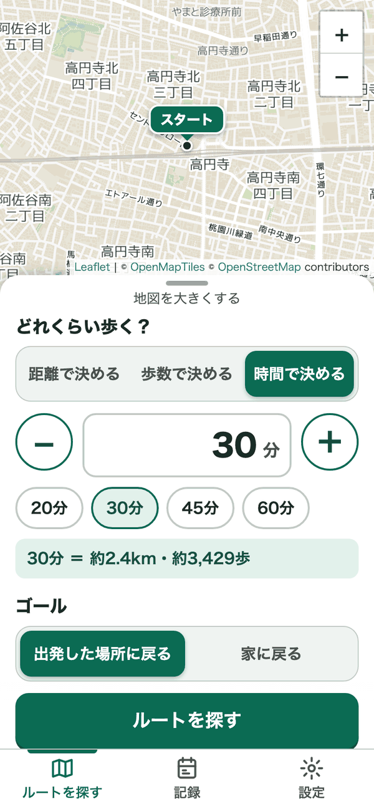
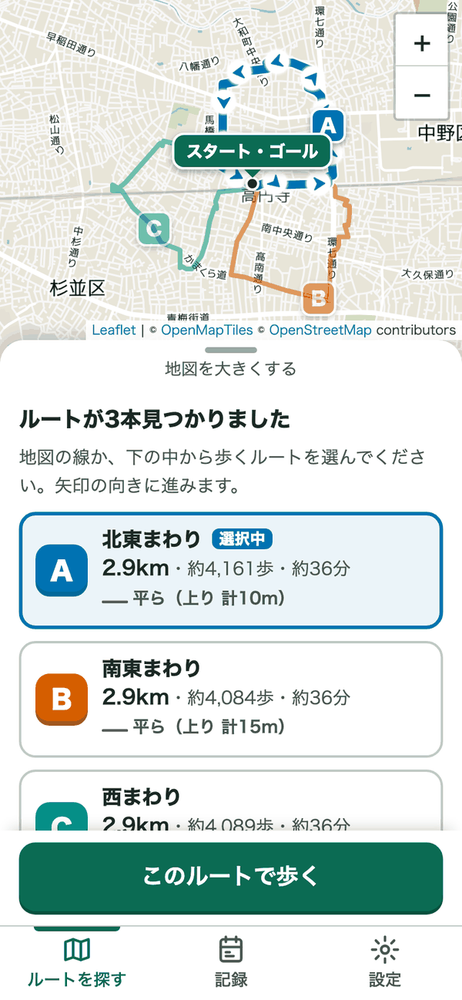
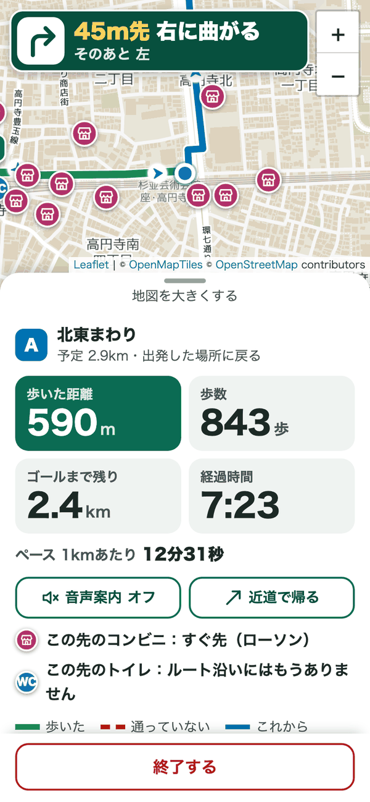

散歩コースを自動で作る、
無料の散歩ルートアプリ
「30分」「3km」などと入れるだけ。今いる場所から歩いて戻ってこられる散歩ルートを、地図に3本出します。登録もインストールもいりません。
さっそく使ってみるスマホのブラウザ（Safari・Chrome）でそのまま使えます。
使い方は3ステップ
-
1歩きたい時間か距離を入れる
「30分」「3km」「5,000歩」のどれでも入れられます。30分の散歩コースがほしいときは「時間で決める」を選んで「30分」を押すだけ。今いる場所はGPSで自動で調べます。

-
23本のルートから選ぶ
ウォーキングコースを自動で3本作成して、地図に色分けして出します。それぞれの距離・歩数・かかる時間と、坂道が少ないか多いかもわかります。気に入らなければ「別のルートを探す」でちがう3本が出ます。

-
3案内にそって歩く
「80m先 右に曲がる」のように、曲がり角を大きな文字でお知らせします。歩いた道は緑の線になり、歩いた距離・歩数・残りの距離もひと目でわかります。音声案内も使えます。

できること
時間・距離・歩数で決められる
「今日は30分だけ」「1万歩歩きたい」に合わせて、ちょうどよい長さの散歩コースを自動で作ります。
出発した場所か、家に戻る
ぐるっと一周して出発地点に戻るコースのほか、外出先から歩いて家に帰るコースも作れます。
坂道が少ないコースがわかる
ルートごとに「平ら」「少し坂あり」「坂が多い」と上りの合計を出すので、坂道の少ないコースを選べます。
トイレ・コンビニを地図に
ルート沿いのトイレとコンビニを地図に出し、歩いている間も「この先のトイレ：約300m先」とお知らせします。
曲がり角の案内と音声
次に曲がる所を文字で大きく出します。音声案内は使う・使わないを選べます。
近道で帰る
疲れたら、ボタン1つで今いる場所からゴールまでの近道に切りかえられます。
いつものコース
気に入ったコースを保存して、次からはボタン1つで出発できます。
記録・グラフ・カレンダー
歩いた日をカレンダーに○で残し、週・月の合計や連続して歩いた日数、目標まであと何kmかを出します。
1kmごとのペース
歩いている間のペースと、1kmごとにかかった時間がわかります。
日の入りのお知らせ
今日の日の入りの時刻を出し、歩き終わるころに暗くなりそうなときは注意を出します。
文字を大きくできる
「ふつう」「大きい」「とても大きい」の3段階から選べます。
こんな人におすすめ
- 毎日の散歩コースがいつも同じで、たまにはちがう道を歩きたい
- 健康のために「30分」「1万歩」など決めた量だけウォーキングしたい
- 引っこしたばかり・旅行先で、近所の歩きやすい道を知りたい
- 坂道が少ないコースや、途中にトイレ・コンビニがあるコースを選びたい
- 犬の散歩やベビーカーでのお出かけに、ちょうどよい長さの道を探したい
よくある質問
無料で使えますか？
はい、今は無料で使えます。会員登録やアプリのインストールもいりません。
「位置情報の利用を許可しますか？」と出ました
今いる場所から出発するルートを作るために、GPS（位置情報）を使います。「許可」を選んでください。
まちがえて「許可しない」を選んだときは、iPhone は「設定」→「プライバシーとセキュリティ」→「位置情報サービス」→「Safari の Web サイト」で、Android は Chrome のアドレスバー左のマークから位置情報を許可できます。地図をタップして出発地点を選ぶこともできます。
歩いている間、画面は点けたままにする必要がありますか？
はい。ブラウザで動くアプリなので、画面を消すと位置を測れなくなります。歩いている間は画面が自動で消えないようにしています。電源ボタンで画面を消すと、その間の道は記録されません（あとで「画面が消えていた約3分間は、位置を測れていませんでした」とお知らせします）。
歩いた記録はどこに保存されますか？
記録・いつものコース・設定は、お使いのスマホのブラウザの中だけに保存されます。どこかのサーバーに送られることはありません。
そのため、機種変更したときや、ブラウザの履歴・Webサイトのデータを消したときは、記録も消えます。別のスマホとは記録を共有できません。
iPhone でも Android でも使えますか？
どちらでも使えます。iPhone は Safari、Android は Chrome での利用をおすすめします。パソコンのブラウザでもルートを探せます。ホーム画面に追加しておくと、アプリのようにすぐ開けます。
地図や道のデータはどこのものですか？
地図と道・トイレ・コンビニの情報は、みんなで作る地図「OpenStreetMap」のデータを使っています。坂の多さは国土地理院の標高タイル、住所検索は国土地理院のサービスを使っています。くわしくは下の「出典・クレジット」をご覧ください。
出てきたルートは必ず歩けますか？
地図のデータから自動で作るため、工事中の道や、通りにくい道が入ることがあります。実際の道の様子や信号・標識を確かめながら、安全に歩いてください。
出典・クレジット
- 地図：© OpenMapTiles © OpenStreetMap contributors（地図の配信：OpenStreetMap Japan）
- 道・トイレ・コンビニのデータ：© OpenStreetMap contributors（ODbL）
- ルート計算：FOSSGIS e.V. の OSRM（routing.openstreetmap.de）
- トイレ・コンビニの検索：Overpass API
- 坂の多さ：国土地理院 標高タイル
- 住所検索：国土地理院 住所検索
- 地図の表示：Leaflet
今日の散歩コース、ぐるっと作ってみませんか？
さっそく使ってみる